通过对齐训练与推理路由器稳定 MoE 强化学习
† 北京大学计算机学院，多媒体信息处理全国重点实验室
‡ Xiaomi LLM-Core
§ 独立研究者
摘要
强化学习（RL）已成为增强大语言模型能力的关键方法。然而，在混合专家（MoE）模型中，路由机制往往引入不稳定性，甚至导致灾难性的 RL 训练崩溃。我们分析了 MoE 模型的训练与推理一致性，发现这两个阶段的路由行为存在显著差异。此外，即使条件完全相同，路由框架在重复前向传播中也可能选择不同的专家。为解决这种根本性的不一致，我们提出 Rollout Routing Replay（R3，rollout 路由重放）：记录推理引擎的路由分布，并在训练时重放。R3 显著降低了训练与推理策略之间的 KL 散度，并在不影响训练速度的情况下缓解极端差异。不同设置下的大量实验表明，R3 成功稳定了 RL 训练，防止训练崩溃，并优于 GSPO 和 TIS 等方法。我们认为，这项工作能够为稳定 MoE 模型的 RL 提供一种新方案。
1 引言
强化学习（RL）已成为大语言模型（LLM）后训练的基石（Guo et al., 2025; OpenAI, 2024; Ouyang et al., 2022）。通过大规模 RL，LLM 能够凭借更深入、更长的推理，获得解决复杂问题所必需的高级能力，包括竞赛级数学问题（Guo et al., 2025）和实际的代码 agent 任务（Luo et al., 2025a）。
基于 LLM 的 RL 面临的一项关键挑战，是平衡效率与稳定性；稳定性是可靠性能的必要条件。现代 RL 框架通常在推理和训练阶段使用不同引擎，例如用 SGLang（Zheng et al., 2024）执行 rollout，用 Megatron（Shoeybi et al., 2019）训练。这种架构上的分离可能导致 token 概率不同，进而引发灾难性的 RL 崩溃（T. M. Lab, 2025）。为缓解这种差异，Yao et al.（2025）在策略更新中加入重要性采样机制，T. M. Lab（2025）则引入专用计算 kernel，以降低 LLM 推理中的非确定性。然而，实践中已有方法仍无法完全解决 MoE 模型 RL 训练中加剧的 off-policy 问题。
在本工作中，我们发现路由分布是造成 MoE RL 不稳定性的一个关键因素。（接下页）
∗ 本工作在 Xiaomi Corporation 实习期间完成。
⋄ 共同通信作者。
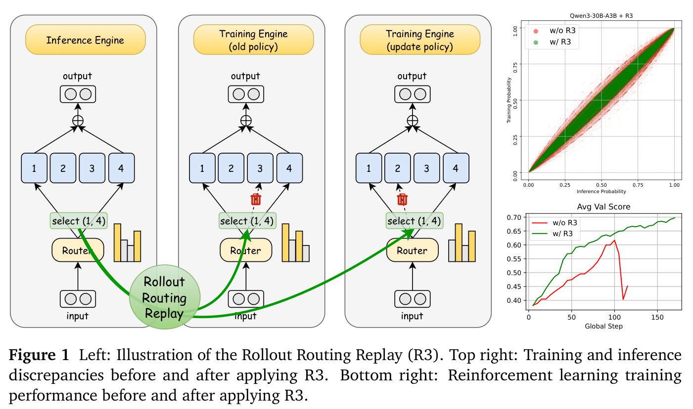
（接上页）在 MoE 模型内部，路由器会为每个输入 token 动态选择并激活一部分专家。与稠密模型相比，不同的路由决策使 MoE 模型在训练与推理之间出现更大的策略差异。我们提出直接处理不稳定性的根源——路由分布本身，而不是采用丢弃差异较大数据之类的变通方法（Zhao et al., 2025a）。
具体而言，我们提出 Rollout Routing Replay（R3），一种简单而有效的 MoE 模型 RL 训练稳定方法。R3 在序列生成时捕获推理引擎的路由分布，并将其直接重放到训练引擎中。这一过程显著缩小训练与推理的差距，表现为不同引擎产生的 logits 之间的 KL 散度大幅下降。因此，两个阶段之间存在显著概率差异的 token 数量约减少了一个数量级。
在使用 MoE 模型的实际 RLVR 任务中，R3 显著改善训练稳定性与性能。与已有的 RL 训练稳定方法相比，我们的方法在效率和整体性能上始终有明显提升。此外，它既适用于 on-policy RL，也适用于采用 mini-batch 的 off-policy RL 场景，体现了我们方法的稳健性。
我们的主要贡献如下：
- 我们系统地识别并分析了 MoE 模型在训练与推理之间的路由分布差异，揭示其在训练不稳定性中的作用。
- 我们提出 Rollout Routing Replay，在训练引擎中复用推理时的路由分布，对齐训练与推理的路由行为。
- 我们将 R3 用于 MoE 强化学习的多种 RL 设置（多个／单个 mini step，以及 Base／SFT 模型），证明其稳定性和整体性能均优于 GSPO 和 TIS。
2 预备知识
符号。我们考虑一个参数为 \(\theta\) 的自回归语言模型，将其表示为策略 \(\pi_\theta\)，它根据查询 \(x\in\mathcal D\) 生成回答 \(y\)。序列的似然通过因子分解给出：\(\pi_\theta(y\mid x)=\prod_{t=1}^{|y|}\pi_\theta(y_t\mid x,y_{<t})\)，其中 \(|y|\) 为序列长度。\(\pi_{\mathrm{infer}}\) 和 \(\pi_{\mathrm{train}}\) 分别表示在推理引擎与训练引擎中运行的策略。
近端策略优化（PPO）（Schulman et al., 2017）是强化学习中策略优化的基础算法。对给定查询 \(x\)，PPO 通过最大化下式来更新策略 \(\pi_\theta\)：
序列 \(y\) 中 token \(y_t\) 的重要性采样比率 \(w_t(\theta)\) 定义为：
token \(y_t\) 的优势 \(\hat A_t\) 通常由一个独立的价值模型估计，\(\varepsilon\) 是重要性比率的裁剪范围。为简洁起见，我们省略 KL 正则化项。
常见做法是为 rollout 和训练使用不同引擎，由此产生一种关键的不一致：数据通过推理策略（\(\pi_{\mathrm{infer}}\)）采样，而损失用训练策略（\(\pi_{\mathrm{train}}\)）计算，如式（1）所示。这种策略不匹配导致强化学习训练不稳定。我们发现，在 MoE 模型中，它主要源于路由器的不一致。我们提出的方案有效缓解这一问题，因此具有广泛适用性，与 GRPO（Shao et al., 2024）、GSPO（Zheng et al., 2025）和 DAPO（Yu et al., 2025）等近期策略优化框架正交且兼容。
3 训练与推理的差异
RL 框架中的训练与推理差异常常造成训练不稳定与模型崩溃。本节证明，这种策略不匹配在 MoE 模型中显著放大，主要源于路由分布不一致。此外，我们发现，即使同一训练框架多次运行，也可能产生不同的 token 概率，进一步加剧 RL 训练的不稳定性。
3.1 MoE 模型训练与推理之间的策略差异
这里我们使用 MoE 模型 Qwen3-30B-A3B（Yang et al., 2025）进行实验，分析训练引擎与推理引擎之间的策略差异。首先，用 SGLang 推理引擎为 2,048 道数学题生成回答，并保存每个生成 token 的概率。这一过程获得约 2,000 万个回答 token。随后将这些回答输入 Megatron，获得训练引擎赋予它们的对应概率。我们使用若干指标衡量这两个概率分布的差异。
KL 散度估计。设 \(T\) 为所有回答 token 的集合，我们使用 Schulman（2020）提出的 \(k_3\) 方法估计训练与推理概率分布之间的 KL 散度：（接下页）
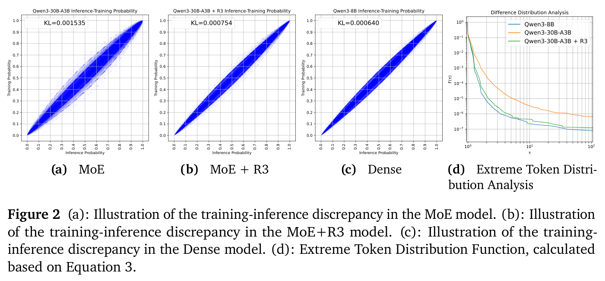
（接上页）
计算表明，Qwen3-30B-A3B（MoE）的估计 KL 散度为 \(1.535\times10^{-3}\)，而 Qwen3-8B（稠密基线）为 \(6.4\times10^{-4}\)。
可视化。为可视化 MoE 模型的训练与推理差异，我们随机抽取 1,000 万个回答 token，绘制以 SGLang 概率为横轴、Megatron 概率为纵轴的散点图。散点集中在 \(y=x\) 直线附近的程度反映一致性程度。如图 2a、2c 所示，与 Qwen3-8B 相比，Qwen3-30B-A3B 的散点带宽得多，表明其训练与推理差异更大。
极端 token 分布分析。为量化模型在训练和推理期间的行为差异，我们引入极端 token 分布函数 \(F(\tau)\)，定义为：
这个函数衡量极端 token 的比例：这些 token 在训练分布 \(\pi_{\mathrm{train}(\theta)}\) 与推理分布 \(\pi_{\mathrm{infer}(\theta)}\) 之间的概率比率超过阈值 \(\tau\)。图 2d 绘制了函数 \(F(\tau)\) 随阈值 \(\tau\) 的变化。图中显示，当 \(\tau>2\) 时，Qwen3-30B-A3B 的极端 token 比例比 Qwen3-8B 高一个数量级。这一显著差距表明 MoE 模型的训练与推理变异程度明显更高。
3.2 MoE 模型训练与推理之间的路由差异
从函数连续性的角度看，MoE 模型与稠密模型的关键区别在于路由引入的不连续性。在 MoE 模型中，路由器输入的微小扰动可能导致选择完全不同的专家，进而使层输出发生很大变化。稠密模型没有显式的专家选择过程，因此不存在这种现象。
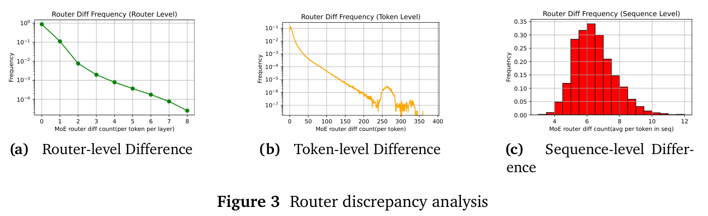
基于这一点，我们进一步分析 MoE 模型在训练与推理之间的路由器分布差异。我们用 SGLang（Zheng et al., 2024）和 Qwen3-30B-A3B（Yang et al., 2025）为 2048 道数学题生成回答。对每条回答，我们从推理引擎收集所有 token（包括输入 token）的路由分布。随后，将这些序列输入 Megatron 引擎进行前向传播，得到训练引擎中观察到的路由分布。我们在不同层面比较这两组路由信息：
路由器层面的比较：对每个 token 和每个 MoE 层，我们统计 MoE 路由器所选专家的不同数量，并计算这些差异出现的频率。图 3a 展示了结果。可以观察到，约 10% 的路由器在训练时选择的专家与推理时不同。
token 层面的比较：对每个 token，我们统计所有层中 MoE 路由器所选专家的不同数量，并计算这些情况出现的频率。图 3b 展示了这些结果。它表明，在前向传播中，94% 的 token 至少在一个层中选择了不同的专家。
序列层面的比较：对一条序列，我们计算每个 token 的路由器分布差异，然后在 token 上取平均，得到每条序列的平均差异，并绘制直方图 3c。结果表明，每个 token 的平均差异约为 6 个路由器。
这些结果表明，MoE 模型在训练与推理期间存在路由器分布差异。第 4 节将通过实验证明，路由差异是 MoE 模型相对于稠密模型额外的训练与推理差异的主要来源。
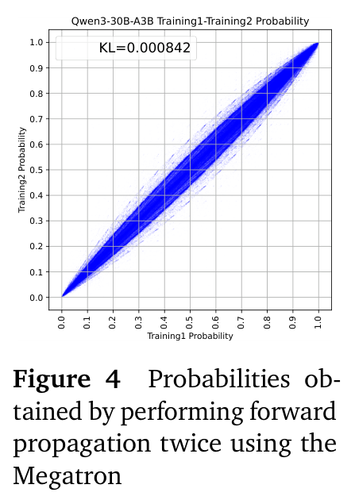
3.3 同一框架内对同一序列重复前向传播的变异
我们在 Megatron 框架下，对同一组序列进行两次前向传播，得到两个概率分布。按照第 3.1 节的流程，我们计算这两个分布之间的 KL 散度并绘制结果（散点图见图 4，KL 散度为 \(8.4\times10^{(-4)}\)）。
结果表明，对 Megatron 引擎中的 MoE 模型，即使输入序列完全相同，两次前向传播的最终输出概率仍可能不同。在强化学习场景中，（接下页）
（接上页）这种变异为旧策略 \(\pi_{\mathrm{train}(\theta_{\mathrm{old}})}\) 的计算引入了噪声。这样的噪声使重要性采样比率不可靠，可能导致强化学习过程不稳定，甚至彻底失效。
4 Rollout Routing Replay
本节详细介绍 Rollout Routing Replay（R3）的实现、多轮对话中的缓存支持，并分析它对训练与推理差异的影响。
4.1 实现
我们先介绍训练框架中 MoE 层的常规前向传播。考虑序列 \(s\) 的第 \(t\) 个 token，以及第 \(l\) 个 Transformer block 中的 MoE 层。设训练时输入该层的向量为 \(\mathbf x_{\mathrm{train}}\)，路由器 logits 的计算方式为：
其中 \(\mathbf W_r\) 表示路由器的线性权重矩阵。设专家数量为 \(M\)，选出的专家数量为 \(K\)。训练时，路由器根据 logits 选择 Top-\(K\) 专家，以一个二元掩码表示：
其中 \(\mathbf I_{\mathrm{train}}\in\{0,1\}^M\)，且 \(\sum_i I_{\mathrm{train},i}=K\)。随后对所选专家的 logits 应用 softmax，得到门控权重：
最后，将专家输出加权求和，得到 MoE 层的输出：
其中 \(\mathbf E_i(\cdot)\) 表示第 \(i\) 个专家网络。
现在介绍 Rollout Routing Replay。假设推理阶段输入 MoE 层的向量为 \(\mathbf x_{\mathrm{infer}}\)。路由器随后计算推理 logits \(\mathbf s_{\mathrm{infer}}=\mathbf x_{\mathrm{infer}}\mathbf W_r\)，并由此得到路由掩码 \(\mathbf I_{\mathrm{infer}}=\operatorname{TopKMask}(\mathbf s_{\mathrm{infer}},K)\)。Rollout Routing Replay 的核心思想，是在训练前向传播期间复用推理路由掩码 \(\mathbf I_{\mathrm{infer}}\)，同时仍对训练 logits 应用 softmax，以保留 gradient 流。具体而言，在这条重放路径上，“重放”门控权重 \(g_{\mathrm{replay}}\) 的计算方式为：
随后，使用这些重放权重组合训练专家的输出，生成重放输出 \(\mathbf y_{\mathrm{replay}}\)：
这一设计有两个主要目的：（a）对齐训练与推理：使用 \(\mathbf I_{\mathrm{infer}}\) 确保训练重放中使用的专家与推理时选择的专家一致，消除专家选择的不匹配。（b）保留 gradient 数据流：由于只重放掩码，gradient 仍能回传到 logits，且不会干扰计算图，有助于有效优化路由器。
通过细致的系统设计与实现，我们支持存储和检索推理引擎中的 MoE 路由器掩码数据，rollout 阶段的总体延迟开销低于 3%。
4.2 路由器掩码缓存与多轮对话支持
许多推理引擎使用 KVCache 前缀缓存策略（Kwon et al., 2023; Zheng et al., 2024），避免对先前出现过的上下文重复进行 prefill 计算，从而显著降低多轮交互的总计算量。我们发现，缓存的路由器掩码具有类似性质：对于相同的前缀 token，MoE 路由器应产生相同的结果。因此，来自推理引擎的路由掩码 \(\mathbf I_{\mathrm{infer}}\) 可以与前缀 KV cache 一起缓存。具体而言，对每个层和 token 前缀，将对应的路由掩码与 KVCache 一起存储。相同前缀再次出现并命中缓存时，可以直接复用掩码，无需重新计算。这使 Rollout Routing Replay 能够与前缀缓存机制无缝集成。
缓存路由掩码在 agent 场景中尤其有益。许多 agent 任务，例如软件工程（Jimenez et al., 2024）和网页浏览（Wei et al., 2025），都涉及自回归生成与工具调用之间的多轮交互。为提高效率，这些过程直接复用先前轮次的 KVCache，因而不必重新生成已经计算过的数据。路由掩码缓存使 R3 在 RL agent 任务中仍然高效，无需重新 prefill 来生成路由掩码，这对训练大规模、先进的 MoE 模型至关重要。
4.3 R3 对训练与推理差异的实证分析
为评估 R3 降低训练与推理差异的有效性，我们使用 Qwen3-30B-A3B 模型重复第 3.1 节的流程。在此过程中，我们缓存 SGLang 推理期间获得的路由分布，并在 Megatron 框架中重放。获得推理引擎概率与训练引擎概率后，使用式（2）估计训练与推理之间的 KL 散度。结果表明，应用 R3 后，训练与推理之间的 KL 散度从 \(1.5\times10^{-3}\) 降至 \(7.5\times10^{-4}\)，接近稠密模型的 \(6.4\times10^{-4}\)。这直观地表明训练与推理差异有所降低。我们还在图 2d 中绘制应用 R3 后训练与推理差异比率的累积分布图。该图表明，对于 MoE 模型，R3 使训练与推理差异较大的 token 出现频率降低了一个数量级。
5 实验
本节评估我们提出的 R3 方法为强化学习带来的性能提升，并与其他基线方法比较。
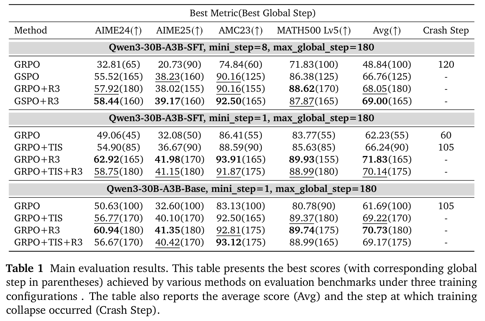
5.1 设置
任务与数据集。我们选择数学推理作为训练的目标任务。对于训练数据集，我们从许多开源数据集中收集并筛选题目，包括 Big-Math-RL-Verified1（Albalak et al., 2025）、ORZ-Math2（Hu et al., 2025）等，得到约 100,000 道可验证数学题。对于评估数据集，我们采用 AIME24、AIME25、AMC23 和 MATH500（level 5）（Hendrycks et al., 2021）作为基准数据集。AIME24 和 AIME25 报告 Avg@32，AMC23 报告 Avg@16，MATH500（level 5）报告 Avg@4。训练过程中，一些模型可能在后期性能下降，甚至崩溃。为确保公平评估，我们每 5 个全局 step 评估模型性能，并报告观察到的最高性能及其对应训练 step。
模型。我们选择两个模型进行实验：（a）Qwen3-30B-A3B-Base（Yang et al., 2025）；（b）Qwen3-30B-A3B-SFT，后者由 Qwen3-30B-A3B-Base 在我们的通用指令遵循数据集上微调得到。
方法。对于 R3 方法，我们在 rollout 期间缓存路由，并在重新计算旧策略和更新策略时重放。我们采用以下基线优化方法进行比较：（a）GRPO（Shao et al., 2024），另外使用 DAPO（Yu et al., 2025）中的 Clip Higher 技术，参数为 \(\epsilon_{\mathrm{low}}=0.2\)、\(\epsilon_{\mathrm{high}}=0.27\)；（b）TIS（Yao et al., 2025），上裁剪阈值为 \(C=2\)；（c）GSPO（Zheng et al., 2025），使用序列级重要性采样，参数为 \(\epsilon_{\mathrm{low}}=3\times10^{-4}\)、\(\epsilon_{\mathrm{high}}=4\times10^{-4}\)。由于 R3 与 GSPO、TIS 等优化技术正交，我们也评估这些技术的多种组合。
1 https://huggingface.co/datasets/SynthLabsAI/Big-Math-RL-Verified
2 https://huggingface.co/Open-Reasoner-Zero/datasets
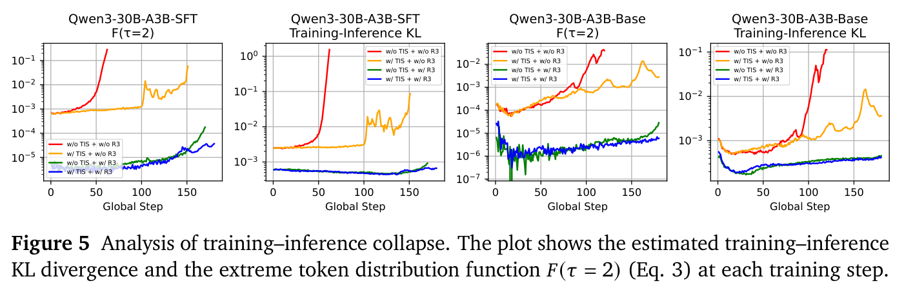
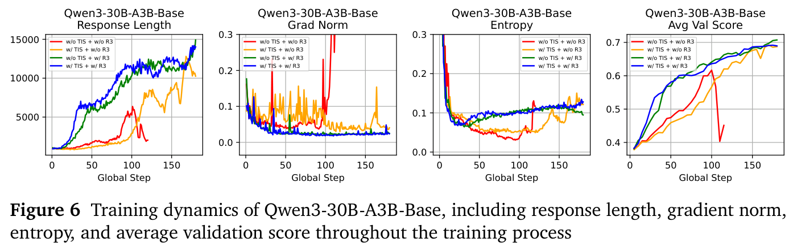
多个 mini step 与单个 mini step。在类似 PPO 的算法中，一个全局 step 收集的样本 batch 通常被划分为多个 mini step，以便多次更新策略。然而，近期研究（Hao et al., 2025; Ji et al., 2025; Yue et al., 2025）表明，仅使用一个 mini step 可以获得更好性能。我们研究这两种设置。多个 mini step 设置下，mini step 设为 8，学习率为 \(1\times10^{-6}\)。单个 mini step 设置下，mini step 设为 1。由于更新次数更少，我们将学习率提高到 \(3\times10^{-6}\)。
其他设置。我们基于 VeRL（Sheng et al., 2024）框架实现 R3，使用 Megatron（Shoeybi et al., 2019）训练、SGLang（Zheng et al., 2024）推理。我们设置 batch 大小为 256、\(n=8\)，每个全局 step 共 2048 个样本。最大 prompt 长度为 2048，最大生成长度为 30720。我们采用 Yu et al.（2025）的动态采样策略，在生成期间仅保留部分正确的样本，直到积累足够的 batch 大小用于训练。不引入专家负载均衡辅助损失。
5.2 实验结果与分析
主要评估结果见表 1。附录 A 提供更详细的评估结果与训练日志，包括每次评估的分数，以及熵、平均奖励、gradient 范数、训练与推理 KL 散度等训练指标。
整体性能。R3 在不同场景下均取得更好的结果。在多个 mini step 设置下，GRPO+R3 比 GSPO 高 1.29 分。此外，将 R3 与 GSPO 结合，性能进一步提高 0.95 分。在单个 mini step 设置下，R3 在 SFT 模型上比 TIS 高 5.58 分，在 Base 模型上高 1.51 分。然而，将 R3 与 TIS 结合并没有明确收益，甚至可能降低性能；例如，单个 mini step 的 SFT 模型中，TIS+R3 比单独使用 R3 低 1.69 分。由于 R3 已显著降低训练与推理之间的策略差异，（接下页）
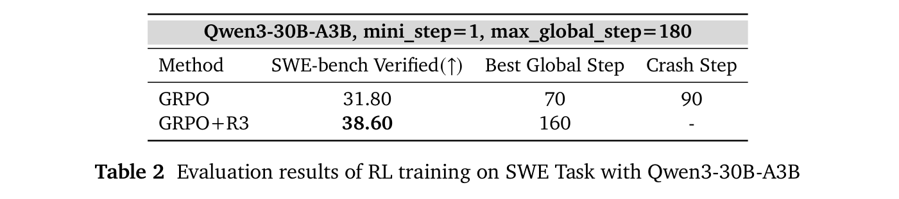
（接上页）TIS 的额外修正几乎不带来收益（Yao et al., 2025）。
训练稳定性。在单个 mini step 设置下，三个未使用 R3 的强化学习过程在训练期间崩溃。为研究崩溃原因，我们绘制了每个训练 step 的估计训练与推理 KL 散度，以及极端 token 分布函数 \(F(\tau=2)\)（式（3）；见图 5）。我们观察到，每个训练过程中，KL 散度与 \(F(\tau=2)\) 的值均随训练过程上升。此外，发生崩溃的训练几乎总伴随着异常高的 KL 和 \(F(\tau=2)\) 值。例如，对于在单个 mini step 设置下使用 GRPO 训练的 SFT 模型，60 个全局 step 之后，\(F(\tau=2)\) 超过 0.1。这表明，对 10% 的 token，训练框架下的概率与推理框架下的概率相差超过 2 倍，体现出严重的训练与推理不一致。相比之下，在使用 R3 的训练过程中，大多数时候 \(F(\tau=2)\) 保持低于 \(10^{-4}\)。通过对齐训练与推理分布，R3 有效稳定了 MoE 模型的强化学习。
优化与生成行为。训练期间，R3 还改善了优化稳定性、探索行为与生成动态。我们为单个 mini step + Base 模型组绘制了训练全过程中的序列长度、gradient 范数、生成熵和评估分数（见图 6）。图中显示，R3 的 gradient 范数更小，序列增长模式更平滑，熵更稳定。（a）序列长度：使用 R3 时，生成序列长度在训练初期快速增长，表明 R3 能够迅速捕捉正确的优化方向。相比之下，另外两个训练过程在第 80 个 step 后才缓慢增长，波动也更明显。（b）gradient 范数：R3 始终保持较低的 gradient 范数，表明优化过程更稳定。（c）生成熵：使用 R3 时，熵在约第 25 个 step 后开始稳步增加，说明模型更早开始探索更优策略。不使用 R3 时，熵增长晚得多，并且波动剧烈。
5.3 多轮任务强化学习
在第 4.2 节中，我们提到 R3 可以适用于多轮任务。为验证这一能力，我们使用 Qwen3-30B-A3B（Yang et al., 2025）模型，在软件工程任务（Jimenez et al., 2024）上进行强化学习实验。我们使用 R2E-Gym-Lite3（Jain et al., 2025）作为训练数据集，SWE-bench Verified4（Jimenez et al., 2024）作为验证数据集。训练时，最大序列长度设为 65536 个 token（包括 prompt、模型回答和环境观察），batch 大小为 64，最大交互步数为 50，学习率为 \(2\times10^{-6}\)，mini_step 为 1。评估时，我们报告 SWE-bench Verified 上的 Pass@1。每 10 个全局 step 评估模型性能。在这些设置下，我们比较 GRPO 与 GRPO+R3 的性能。
3 https://huggingface.co/datasets/R2E-Gym/R2E-Gym-Lite
4 https://huggingface.co/datasets/princeton-nlp/SWE-bench_Verified
所有其他超参数均遵循第 5.1 节所述配置。
结果见表 2，详细训练指标见附录 C。未使用 R3 的 GRPO 训练过程在约 90 个训练 step 后崩溃，而 GRPO+R3 保持稳定。GRPO+R3 最终性能达到 Pass@1 38.6，比 GRPO 高 6.8 分。由于使用了第 4.2 节介绍的路由器掩码缓存技术，我们无需重新 prefill 前缀来获取路由掩码，因此 rollout 速度没有降低。这些结果证明 R3 能很好地泛化到多轮强化学习设置。
6 相关工作
6.1 混合专家
混合专家（MoE）架构起初是一种将输入路由到专门子网络的集成方法（Jacobs et al., 1991; Jordan and Jacobs, 1994），如今已成为扩展现代语言模型规模的基石。通过门控网络，对每个 token 仅稀疏激活一部分专家参数，MoE 将模型总参数量与推理成本解耦，从而显著提升模型容量。这种计算效率推动了 MoE 在先进 Transformer 模型中的应用（Jiang et al., 2024; Liu et al., 2024; Team et al., 2025; Yang et al., 2025）。然而，MoE 模型容易受到门控网络敏感性带来的训练不稳定性影响（Dai et al., 2022; Thérien et al., 2025），使得路由器稳健性成为模型有效收敛的核心挑战。
6.2 LLM 强化学习中的不稳定性
可验证奖励强化学习（RLVR）已成为提升大语言模型复杂推理（Xie et al., 2025）、数学（Hu et al., 2025; Shao et al., 2024）和代码能力（Luo et al., 2025b）的标准方法。GRPO（Shao et al., 2024）和 DAPO（Yu et al., 2025）等算法现已广泛采用。然而，这种训练范式也面临训练不稳定性的挑战，可能妨碍收敛并造成模型崩溃风险（Chen et al., 2025; Xia et al., 2025; Yang et al., 2025）。近期研究识别了若干根本原因并提出相应解决方案。例如，Zhao et al.（2025b）试图通过优化 token 级奖励的几何平均数稳定训练。另有 GSPO（Zheng et al., 2025）认为，GRPO 的不稳定性源于重要性采样权重使用不当，并引入新的序列级重要性比率进行修正。Yao et al.（2025）提出截断重要性采样（TIS），以缓解训练框架（例如 FSDP（Zhao et al., 2023））与推理引擎（例如 vLLM（Kwon et al., 2023））之间差异引起的不一致。另一种思路是 T. M. Lab（2025）将不稳定性归因于计算 kernel 的非确定性，提出 batch 不变操作，但这带来显著性能开销，并且尚未在 MoE 模型的 RL 中研究。
这些稳定性挑战在混合专家（MoE）架构中显著加剧。我们发现，这种更强的不稳定性主要由路由不一致造成：路由器的敏感性与框架差异共同作用，使相同回答在 rollout 和训练阶段的专家分配不同。为直接解决这一核心问题，我们提出的 Rollout Routing Replay 在训练传播期间显式记录并重放推理时的路由决策。这个简单策略强制实现一致性，使 MoE 模型能够获得与稠密模型相当的训练稳定性，而不引入计算开销。
6.3 路由重放
路由重放最初由 Zheng et al.（2025）提出（下文称为 Recompute Routing Replay，即重计算路由重放）。这里澄清我们的 Rollout Routing Replay 与它的区别。如图 1 所示，典型强化学习框架中有三个前向传播阶段：Rollout、Recompute 和 Update。Recompute Routing Replay 缓存 Recompute 阶段的路由，并在 Update 阶段重放，以解决模型更新导致的路由差异。然而，这种方法没有考虑训练框架与推理框架之间的不一致也会导致路由差异。相比之下，我们的 Rollout Routing Replay 缓存 Rollout 阶段的路由，并在 Recompute 和 Update 两个阶段重放，从而解决框架差异导致的路由差异。值得注意的是，由于我们的方法在 Recompute 和 Update 阶段使用相同路由，它也解决了模型更新导致的路由差异。此外，当 mini step 设为 1 时，当前策略与旧策略相同，Recompute Routing Replay 方法因此失去作用。由于训练框架与推理框架之间的差异仍然存在，Rollout Routing Replay 在这一设置下依然有效。
7 结论
在本工作中，我们指出，训练与推理之间的路由差异是 MoE 强化学习不稳定性的主要来源。为解决这一问题，我们提出 Rollout Routing Replay（R3），在训练期间复用推理时的路由分布，在保留 gradient 流的同时对齐专家选择。多个 RL 设置下的实验表明，R3 大幅降低训练与推理差异，稳定训练，并持续优于已有方法。我们的结果说明了对齐 MoE 模型训练与推理的重要性，也表明 R3 为提升稳定性提供了一个切实可行的方案。
参考文献
- A. Albalak, D. Phung, N. Lile, R. Rafailov, K. Gandhi, L. Castricato, A. Singh, C. Blagden, V. Xiang, D. Mahan, and N. Haber. Big-math：面向语言模型强化学习的大规模高质量数学数据集, 2025. URL https://arxiv.org/abs/2502.17387.
- A. Bercovich, I. Levy, I. Golan, M. Dabbah, R. El-Yaniv, O. Puny, I. Galil, Z. Moshe, T. Ronen, N. Nabwani, I. Shahaf, O. Tropp, E. Karpas, R. Zilberstein, J. Zeng, S. Singhal, A. Bukharin, Y. Zhang, T. Konuk, G. Shen, et al. Llama-nemotron：高效推理模型, 2025. URL https://arxiv.org/abs/2505.00949.
- A. Chen, A. Li, B. Gong, B. Jiang, B. Fei, B. Yang, B. Shan, C. Yu, C. Wang, C. Zhu, et al. Minimax-m1：利用 lightning attention 高效扩展测试时计算. arXiv 预印本 arXiv:2506.13585, 2025.
- D. Dai, L. Dong, S. Ma, B. Zheng, Z. Sui, B. Chang, and F. Wei. Stablemoe：混合专家的稳定路由策略. arXiv 预印本 arXiv:2204.08396, 2022.
- H. Face. Open r1：Deepseek-r1 的完全开放复现, 2025 年 1 月. URL https://github.com/huggingface/open-r1.
- D. Guo, D. Yang, H. Zhang, J. Song, R. Zhang, R. Xu, Q. Zhu, S. Ma, P. Wang, X. Bi, et al. Deepseek-r1：通过强化学习激发 LLM 的推理能力. arXiv 预印本 arXiv:2501.12948, 2025.
- Y. Hao, L. Dong, X. Wu, S. Huang, Z. Chi, and F. Wei. 采用最优奖励基线的 on-policy RL, 2025. URL https://arxiv.org/abs/2505.23585.
- H. He and T. M. Lab. 消除 LLM 推理中的非确定性. Thinking Machines Lab: Connectionism, 2025. doi: 10.64434/tml.20250910. https://thinkingmachines.ai/blog/defeating-nondeterminism-in-llm-inference/.
- D. Hendrycks, C. Burns, S. Kadavath, A. Arora, S. Basart, E. Tang, D. Song, and J. Steinhardt. 使用 MATH 数据集衡量数学问题求解能力. NeurIPS, 2021.
- J. Hu, Y. Zhang, Q. Han, D. Jiang, X. Zhang, and H.-Y. Shum. Open-reasoner-zero：在基础模型上扩展强化学习规模的开源方法, 2025. URL https://arxiv.org/abs/2503.24290.
- R. A. Jacobs, M. I. Jordan, S. J. Nowlan, and G. E. Hinton. 自适应局部混合专家. Neural computation, 3(1):79–87, 1991.
- N. Jain, J. Singh, M. Shetty, L. Zheng, K. Sen, and I. Stoica. R2e-gym：用于扩展开源权重 SWE agent 的程序化环境与混合验证器. arXiv 预印本 arXiv:2504.07164, 2025.
- Y. Ji, X. Tian, S. Zhao, H. Wang, S. Chen, Y. Peng, H. Zhao, and X. Li. Am-thinking-v1：在 32b 规模推进推理前沿, 2025. URL https://arxiv.org/abs/2505.08311.
- A. Q. Jiang, A. Sablayrolles, A. Roux, A. Mensch, B. Savary, C. Bamford, D. S. Chaplot, D. d. l. Casas, E. B. Hanna, F. Bressand, et al. Mixtral 混合专家. arXiv 预印本 arXiv:2401.04088, 2024.
参考文献（续）
- C. E. Jimenez, J. Yang, A. Wettig, S. Yao, K. Pei, O. Press, and K. Narasimhan. Swe-bench：语言模型能否解决真实世界的 GitHub issue？, 2024. URL https://arxiv.org/abs/2310.06770.
- M. I. Jordan and R. A. Jacobs. 分层混合专家与 EM 算法. Neural computation, 6(2):181–214, 1994.
- W. Kwon, Z. Li, S. Zhuang, Y. Sheng, L. Zheng, C. H. Yu, J. E. Gonzalez, H. Zhang, and I. Stoica. 使用 PagedAttention 高效管理大语言模型服务内存. In Proceedings of the ACM SIGOPS 29th Symposium on Operating Systems Principles, 2023.
- A. Liu, B. Feng, B. Xue, B. Wang, B. Wu, C. Lu, C. Zhao, C. Deng, C. Zhang, C. Ruan, et al. Deepseek-v3 技术报告. arXiv 预印本 arXiv:2412.19437, 2024.
- A. Lozhkov, H. Kydlíček, L. B. Allal, G. Penedo, E. Beeching, Q. Gallouédec, N. Habib, L. Tunstall, and L. von Werra. Openr1-math-220k. https://huggingface.co/datasets/open-r1/OpenR1-Math-220k, 2025.
- M. Luo, N. Jain, J. Singh, S. Tan, A. Patel, Q. Wu, A. Ariyak, C. Cai, T. Venkat, S. Zhu, B. Athiwaratkun, M. Roongta, C. Zhang, L. E. Li, R. A. Popa, K. Sen, and I. Stoica. Deepswe：通过扩展 RL 从零训练先进代码 agent. https://pretty-radio-b75.notion.site/DeepSWE-Training-a-Fully-Open-sourced-State-of-the-Art-Coding-Agent-by-Scaling-RL-22281902c1468193aabbe9a8c59bbe33, 2025a. Notion 博客.
- M. Luo, S. Tan, R. Huang, A. Patel, A. Ariyak, Q. Wu, X. Shi, R. Xin, C. Cai, M. Weber, C. Zhang, L. E. Li, R. A. Popa, and I. Stoica. Deepcoder：达到 o3-mini 水平的完全开源 14b 代码模型. https://pretty-radio-b75.notion.site/DeepCoder-A-Fully-Open-Source-14B-Coder-at-O3-mini-Level-1cf81902c14680b3bee5eb349a512a51, 2025b. Notion 博客.
- OpenAI. 学习使用 LLM 进行推理, 2024. URL https://openai.com/index/learning-to-reason-with-llms/.
- L. Ouyang, J. Wu, X. Jiang, D. Almeida, C. Wainwright, P. Mishkin, C. Zhang, S. Agarwal, K. Slama, A. Ray, et al. 通过人类反馈训练语言模型遵循指令. Advances in neural information processing systems, 35:27730–27744, 2022.
- G. Penedo, A. Lozhkov, H. Kydlíček, L. B. Allal, E. Beeching, A. P. Lajarín, Q. Gallouédec, N. Habib, L. Tunstall, and L. von Werra. Codeforces CoT. https://huggingface.co/datasets/open-r1/codeforces-cots, 2025.
- J. Schulman. 近似计算 KL 散度, 2020. URL http://joschu.net/blog/kl-approx.html.
- J. Schulman, F. Wolski, P. Dhariwal, A. Radford, and O. Klimov. 近端策略优化算法. arXiv 预印本 arXiv:1707.06347, 2017.
- Z. Shao, P. Wang, Q. Zhu, R. Xu, J. Song, M. Zhang, Y. Li, Y. Wu, and D. Guo. Deepseek-math：推进开放语言模型的数学推理极限. arXiv 预印本 arXiv:2402.03300, 2024.
- G. Sheng, C. Zhang, Z. Ye, X. Wu, W. Zhang, R. Zhang, Y. Peng, H. Lin, and C. Wu. Hybridflow：灵活高效的 RLHF 框架. arXiv 预印本 arXiv: 2409.19256, 2024.
参考文献（续）
- M. Shoeybi, M. Patwary, R. Puri, P. LeGresley, J. Casper, and B. Catanzaro. Megatron-lm：利用模型并行训练数十亿参数语言模型. arXiv 预印本 arXiv:1909.08053, 2019.
- K. Team, A. Du, B. Gao, B. Xing, C. Jiang, C. Chen, C. Li, C. Xiao, C. Du, C. Liao, et al. Kimi k1. 5：扩展 LLM 强化学习的规模. arXiv 预印本 arXiv:2501.12599, 2025.
- B. Thérien, C.-É. Joseph, Z. Sarwar, A. Panda, A. Das, S.-X. Zhang, S. Rawls, S. Sahu, E. Belilovsky, and I. Rish. MoE 的持续预训练：你的路由器有多稳健？ arXiv 预印本 arXiv:2503.05029, 2025.
- J. Wei, Z. Sun, S. Papay, S. McKinney, J. Han, I. Fulford, H. W. Chung, A. T. Passos, W. Fedus, and A. Glaese. Browsecomp：简单但具有挑战性的浏览 agent 基准, 2025. URL https://arxiv.org/abs/2504.12516.
- B. Xia, B. Shen, Cici, D. Zhu, D. Zhang, G. Wang, H. Zhang, H. Liu, J. Xiao, J. Dong, L. Zhao, P. Li, P. Wang, S. Yu, S. Chen, W. Wang, W. Ma, X. Deng, Y. Huang, Y. Song, Z. Jiang, B. Ye, C. Cai, C. He, D. Zhang, D. Zhang, G. Wang, H. Tian, H. Zhao, H. Qu, H. Xu, J. Shi, K. Bao, K. Fang, K. Zhou, K. Zhou, L. Li, M. Zhu, N. Chen, Q. Wang, S. Liu, S. Li, S. Gu, S. Ren, S. Liu, S. Deng, W. Zhuang, W. Lv, W. Yang, X. Zhang, X. Yong, X. Zhang, X. Song, X. Xu, X. Wang, Y. Yan, Y. Tu, Y. Tian, Y. Wang, Y. Yu, Z. Lin, Z. Song, and Z. Yue. Mimo：释放语言模型的推理潜力——从预训练到后训练, 2025. URL https://arxiv.org/abs/2505.07608.
- T. Xie, Z. Gao, Q. Ren, H. Luo, Y. Hong, B. Dai, J. Zhou, K. Qiu, Z. Wu, and C. Luo. Logic-rl：通过基于规则的强化学习释放 LLM 推理能力. arXiv 预印本 arXiv:2502.14768, 2025.
- A. Yang, A. Li, B. Yang, B. Zhang, B. Hui, B. Zheng, B. Yu, C. Gao, C. Huang, C. Lv, C. Zheng, D. Liu, F. Zhou, F. Huang, F. Hu, H. Ge, H. Wei, H. Lin, J. Tang, J. Yang, J. Tu, J. Zhang, J. Yang, J. Yang, J. Zhou, J. Zhou, J. Lin, K. Dang, K. Bao, K. Yang, L. Yu, L. Deng, M. Li, M. Xue, M. Li, P. Zhang, P. Wang, Q. Zhu, R. Men, R. Gao, S. Liu, S. Luo, T. Li, T. Tang, W. Yin, X. Ren, X. Wang, X. Zhang, X. Ren, Y. Fan, Y. Su, Y. Zhang, Y. Zhang, Y. Wan, Y. Liu, Z. Wang, Z. Cui, Z. Zhang, Z. Zhou, and Z. Qiu. Qwen3 技术报告, 2025. URL https://arxiv.org/abs/2505.09388.
- F. Yao, L. Liu, D. Zhang, C. Dong, J. Shang, and J. Gao. 你的高效 RL 框架悄悄带来了 off-policy RL 训练, 2025 年 8 月. URL https://fengyao.notion.site/off-policy-rl.
- Q. Yu, Z. Zhang, R. Zhu, Y. Yuan, X. Zuo, Y. Yue, T. Fan, G. Liu, L. Liu, X. Liu, et al. Dapo：大规模开源 LLM 强化学习系统, 2025. URL https://arxiv.org/abs/2503.14476, 2025.
- Z. Yue, Z. Lin, Y. Song, W. Wang, S. Ren, S. Gu, S. Li, P. Li, L. Zhao, L. Li, K. Bao, H. Tian, H. Zhang, G. Wang, D. Zhu, Cici, C. He, B. Ye, B. Shen, Z. Zhang, Z. Jiang, Z. Zheng, Z. Song, Z. Luo, Y. Yu, Y. Wang, Y. Tian, Y. Tu, Y. Yan, Y. Huang, X. Wang, X. Xu, X. Song, X. Zhang, X. Yong, X. Zhang, X. Deng, W. Yang, W. Ma, W. Lv, W. Zhuang, W. Liu, S. Deng, S. Liu, S. Chen, S. Yu, S. Liu, S. Wang, R. Ma, Q. Wang, P. Wang, N. Chen, M. Zhu, K. Zhou, K. Zhou, K. Fang, J. Shi, J. Dong, J. Xiao, J. Xu, H. Liu, H. Xu, H. Qu, H. Zhao, H. Lv, G. Wang, D. Zhang, D. Zhang, D. Zhang, C. Ma, C. Liu, C. Cai, and B. Xia. Mimo-vl 技术报告, 2025. URL https://arxiv.org/abs/2506.03569.
参考文献（续）
- X. Zhao, Y. Liu, K. Xu, J. Guo, Z. Wang, Y. Sun, X. Kong, Q. Cao, L. Jiang, Z. Wen, Z. Zhang, and J. Zhou. 小漏可沉大船——利用 icepop 增强 MoE 的 RL 训练！, 2025 年 9 月，2025a. URL https://ringtech.notion.site/icepop.
- Y. Zhao, A. Gu, R. Varma, L. Luo, C.-C. Huang, M. Xu, L. Wright, H. Shojanazeri, M. Ott, S. Shleifer, A. Desmaison, C. Balioglu, P. Damania, B. Nguyen, G. Chauhan, Y. Hao, A. Mathews, and S. Li. Pytorch FSDP：扩展完全分片数据并行的经验, 2023. URL https://arxiv.org/abs/2304.11277.
- Y. Zhao, Y. Liu, J. Liu, J. Chen, X. Wu, Y. Hao, T. Lv, S. Huang, L. Cui, Q. Ye, et al. 几何平均策略优化. arXiv 预印本 arXiv:2507.20673, 2025b.
- C. Zheng, S. Liu, M. Li, X.-H. Chen, B. Yu, C. Gao, K. Dang, Y. Liu, R. Men, A. Yang, J. Zhou, and J. Lin. 组序列策略优化, 2025. URL https://arxiv.org/abs/2507.18071.
- L. Zheng, L. Yin, Z. Xie, C. Sun, J. Huang, C. H. Yu, S. Cao, C. Kozyrakis, I. Stoica, J. E. Gonzalez, C. Barrett, and Y. Sheng. Sglang：高效执行结构化语言模型程序, 2024. URL https://arxiv.org/abs/2312.07104.
附录
A 详细评估结果与训练指标
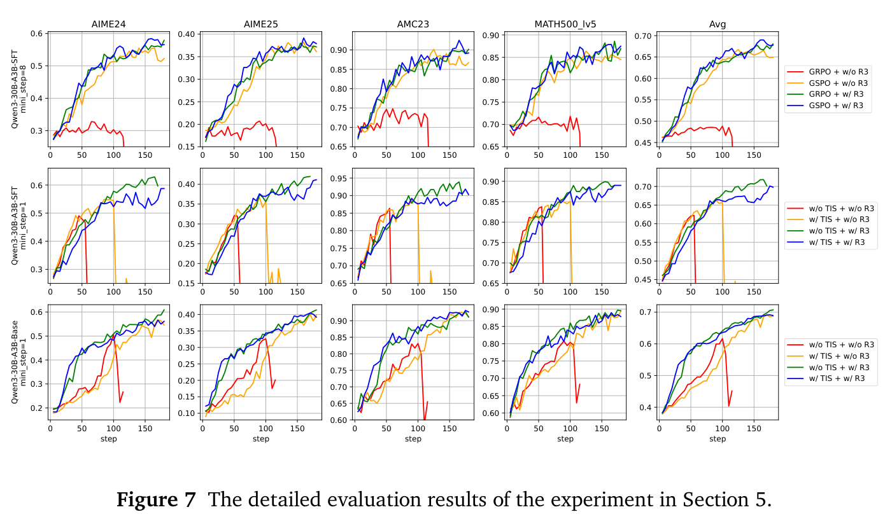
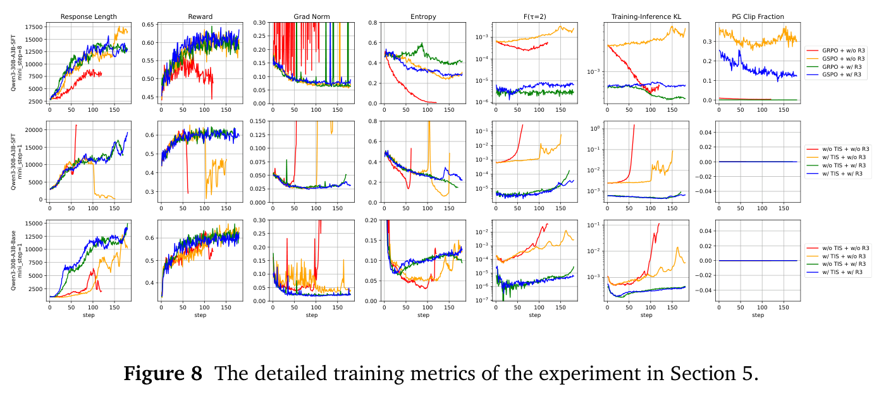
B 推理 SFT 模型的补充实验
为评估 R3 在推理 SFT 模型上的性能，我们在开源长推理数据集 Mixture-of-Thoughts5（Bercovich et al., 2025; Face, 2025; Lozhkov et al., 2025; Penedo et al., 2025）上微调 Qwen3-30B-A3B-Base（Yang et al., 2025），得到 Qwen3-30B-A3B-ReasoningSFT 模型。我们对该模型进行强化学习实验。在 mini_step = 4 时，以 \(2\times10^{-6}\) 的学习率比较 GSPO 与 GRPO+R3；在 mini_step = 1 时，以 \(3\times10^{-6}\) 的学习率比较 GRPO 与 GRPO+R3。其他所有超参数均遵循第 5.1 节所述配置。
结果见表 3，训练与验证指标见图 9。实验表明，不使用 R3 的训练过程会崩溃（mini_step = 4 时，GSPO 在第 90 个训练 step 崩溃；mini_step = 1 时，GRPO 在第 40 个训练 step 崩溃），而使用 R3 的训练过程保持稳健。此外，使用 R3 训练时，整个训练过程中的序列长度增长模式更稳定，熵与 gradient 范数也更稳定。
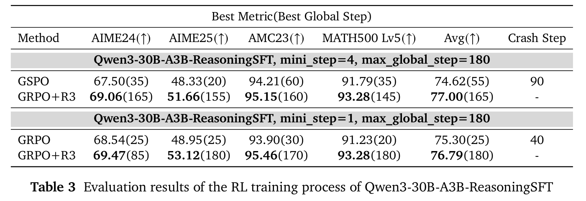
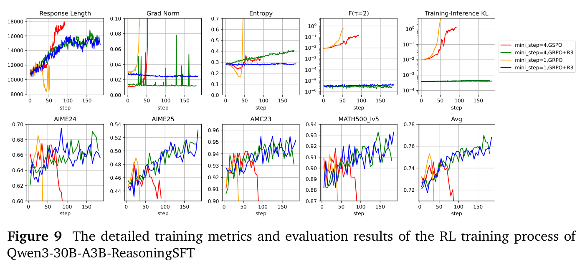
5 https://huggingface.co/datasets/open-r1/Mixture-of-Thoughts
C 多轮强化学习的详细训练指标
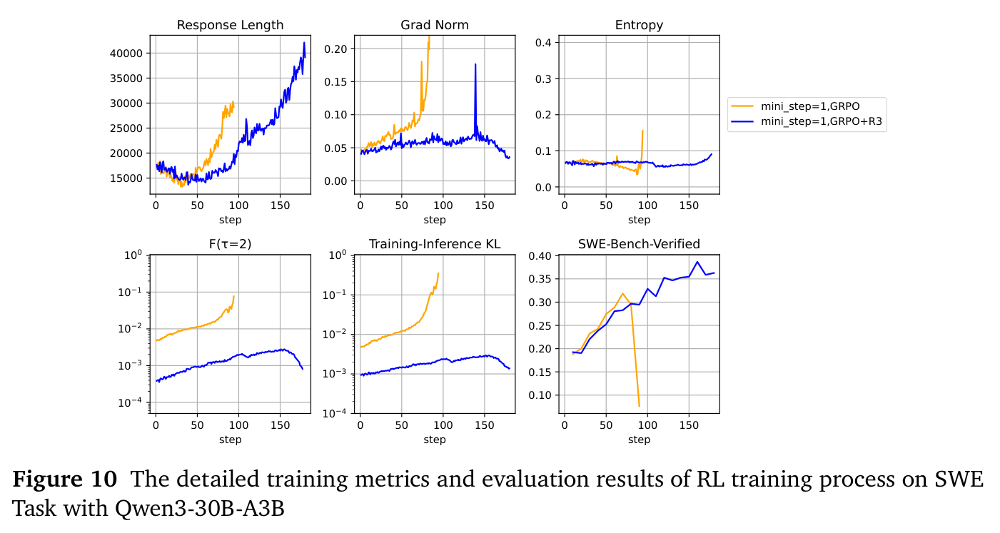